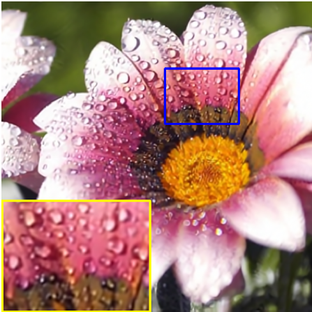
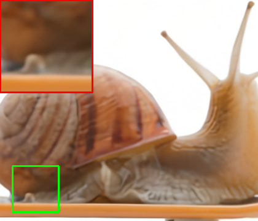

CoSTA · ECCV 2026
Stabilizing Deep Reconstruction Operators with Contractive Anchoring
Indian Institute of Science, Bengaluru
Keep the pretrained denoiser. Stabilize its reconstruction trajectory with a learned contractive anchor.
The idea
Intervene when
instability emerges.
Pretrained denoisers are usually trained for a single denoising step. Their behavior can change when they are repeatedly used inside a reconstruction algorithm: image quality may rise, peak, and then collapse.
CoSTA characterizes the local behavior of the reconstruction operator through a stability index. It adaptively mixes the original black-box update with a contractive reconstruction operator, whose stable iterates provide an anchor.
The anchor uses a lightweight, trainable gradient-step convolutional denoiser constructed from a smooth strongly convex potential. This makes the anchor contractive by design while allowing it to learn useful image structure.
$T$ is the original reconstruction operator; $S$ is the contractive anchor; $\theta$ is selected adaptively. The anchor has a contractivity guarantee. The black-box stabilization result is assessed through the paper’s stability index and empirical avoidance of post-peak degradation; it is not an unconditional global convergence claim for every pretrained denoiser.
-
Preserve the pretrained model
Stabilization requires no retraining or architectural modification of the original black-box denoiser.
-
Adaptive anchoring
The stable anchor controls potentially unstable updates while keeping the original operator central to reconstruction.
-
Across reconstruction methods
The paper evaluates different PnP solvers, RED, denoiser families, noise levels, and imaging tasks.

Motion Deblurring showcase
Keep the reconstruction
after the peak.
Compare vanilla PnP-HQS with the stabilized reconstruction using DRUNet. On this published example, vanilla reaches 20.83 dB at iteration 1000, while the stabilized result is 29.25 dB.
Flower image; gaussian blur; noise $\sigma_n = 0.02$. Saved outputs from Figure 6, including the original zoom annotations.
Stability over iterations
Anchor quality influences stabilization. A reasonably accurate anchor can prevent late collapse.

\(3\times\) Superresolution showcase
The same stabilization mechanism also applies to SR.
Compare vanilla PnP-HQS with the stabilized reconstruction using GSDRUNet. On this published example, vanilla collapses to 21.01 dB at iteration 3000, while the stabilized result is 33.06 dB.
Snail image; gaussian blur; noise σn = 0.02. Saved outputs from Figure 6, including the original zoom annotations.
Knee MRI showcase
Stablization of
the convergence critical MRI.
Compare vanilla RED-GD with the stabilized reconstruction using DRUNet. On this published example, vanilla reaches 33.22 dB at iteration 1000, while the stabilized result is 43.76 dB.
Knee PD-MRI image; 2-fold single-coil; noise $\sigma_n = 0.002$. Saved outputs from Figure 15, including the original zoom annotations.
Citation
@inproceedings{sinha2026stabilizing,
title = {Stabilizing Deep Reconstruction Operators with Contractive Anchoring},
author = {Sinha, Arghya and Mukherjee, Trishit and Chaudhury, Kunal N.},
booktitle = {Computer Vision -- ECCV 2026},
pages = {230--246},
year = {2026},
doi = {10.1007/978-3-032-37232-1_13}
}
Related earlier work: ViSTA: Viscosity Stabilized Plug-and-Play Reconstruction (2025).